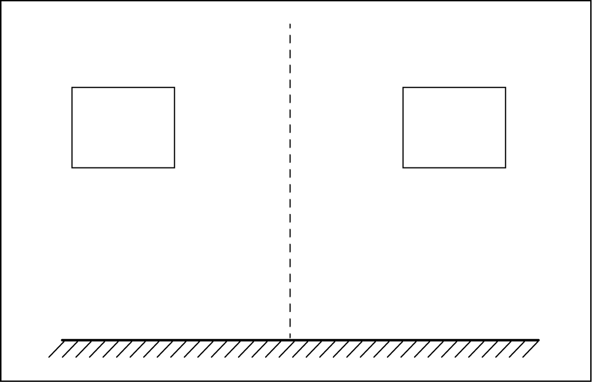
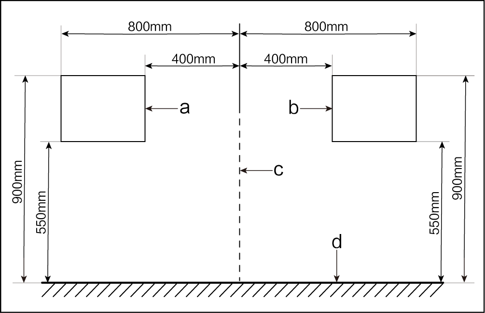
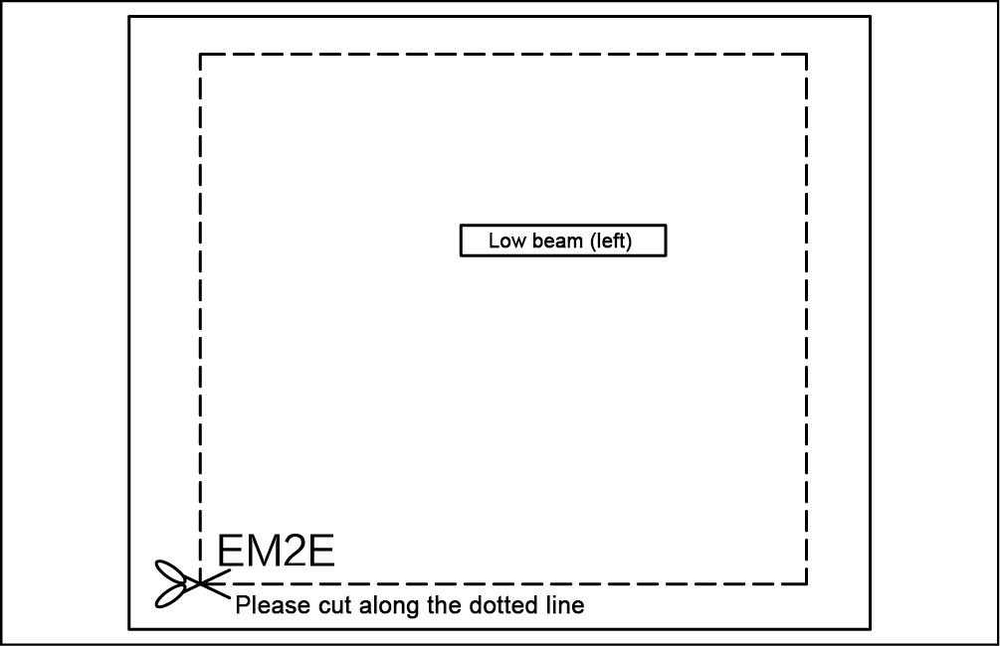
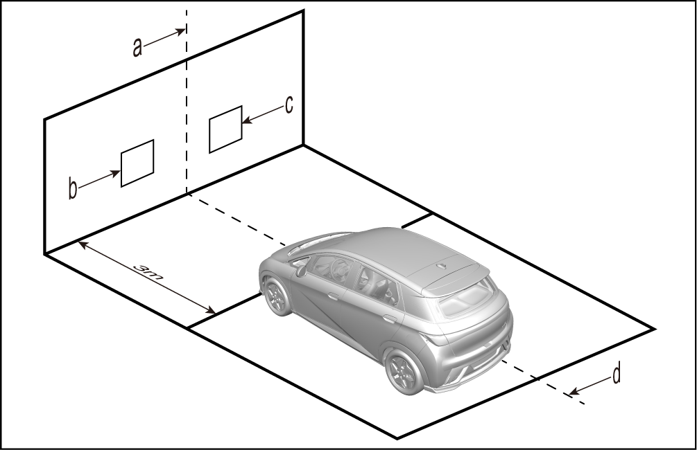
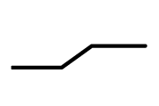
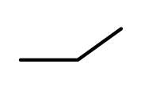
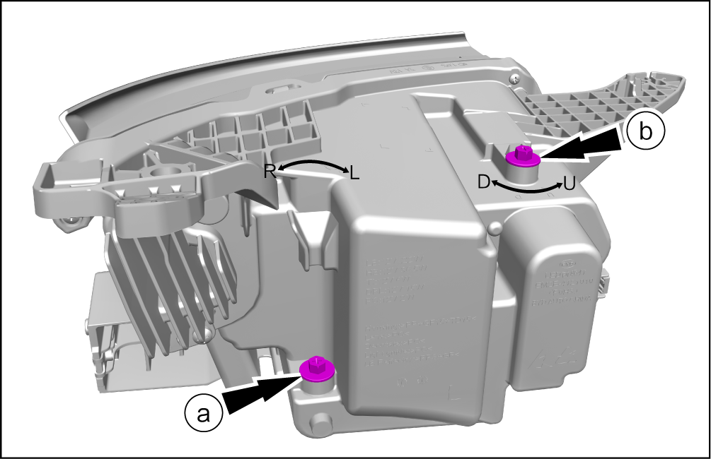

Inspection and adjustment of headlight dimming function
It is essential to adjust the headlight cluster assembly in case of lighting deviation or replacement.
Preparation of test screen
-
Use a 1.2 m (height) × 2 m (width) wall or whiteboard to make the test screen. Draw a longitudinal centerline (corresponding to the vehicle) and dimming test paper position boxes on the wall or whiteboard.

-
The requirements for dimensions of the centerline and dimming test paper position boxes are as follows:

Designation of letters in the figure:
S/N Name S/N Name a Left position box c Vehicle centerline b Right position box d Ground
Preparation of dimming test paper

To download the dimming test paper, please refer to attachments of Dolphin dimming position diagrams in the TSB (EM2E Dimming Position Diagram - Left and EM2E Dimming Position Diagram - Right).
-
Print the test paper for Dolphin model on an A2 (420 mm × 594 mm) paper in a professional print shop.
-
Cut the printed test paper along the dotted line and laminate it.
Reminder-
The methods for the left and right sides are the same. Take the left one as an example.
-
Make sure that the test paper is printed at 1:1 scale, with the dotted line box for left or right headlight cluster being 430 mm × 350 mm. Please check that dimensions are correct after printing.
-
Attach the test paper to the corresponding position box of the test screen. After use, put it in a folder or file bag, and properly keep it in the spare parts warehouse.

-
Preparation of test site
-
Make sure that the test site is flat and spacious, and avoid the influence of strong light irradiation on dimming.
-
Draw a straight line parallel to the test screen on the ground 3 m away from the test screen, draw the vehicle centerline on the ground, and make sure that the centerline is perpendicular to the 3 m line and the test screen.

Designation of letters in the figure:
S/N Name S/N Name a Vehicle centerline c Right position box b Left position box d Vehicle centerline
Preparation of test vehicle
-
Check and make sure that there is no damage or deformation of the vehicle and around the headlights.
-
Make sure that the vehicle lubricating oil level and the coolant level meet the design requirements.
-
Make sure that the tire pressure meets the standard inflation pressure requirement.
-
Never place other articles in the vehicle, but be sure to place the tools delivered with the vehicle at the specified positions.
-
Have a person weighing 75 kg seated in the driver's seat (counterweight method is allowed if the weight is below 75 kg).
-
Place the vehicle on a horizontal plane and shake the vehicle body from side to side to make the chassis suspension of the vehicle stay in a stable state.
-
For a vehicle equipped with a dimmer switch, turn the headlight adjustment switch to "0" position before dimming; for a vehicle without a dimmer switch (i.e. automatic dimming), check whether the light MIL on the instrument panel cluster illuminates before dimming. If it illuminates or flashes, conduct repair, make a record and provide feedback; if it does not illuminate or flash, complete initialization with the VDS.
-
Connect the VDS and enter the diagnostic system interface.

-
Power on the vehicle.
-
Go to: Model diagnosis/(corresponding model code)/Body module/Headlight adjustment unit/Headlight initialization.
Test steps
-
For a model with joint adjustment of high and low beams, only low beams need to be adjusted.
-
There are two light patterns of low beams, namely "

" and "
". The lower inflection point of cut-off line is taken as the light pattern center of low beams, while the brightest spot is taken as the light pattern center of high beams. -
If low beams need to be shielded for adjusting high beams, headlight surfaces cannot be directly shielded or the shielding time cannot exceed 2 minutes as headlight covers are made of plastic, so as to avoid gathering of heat that may cause burn-out of headlight covers.
-
During light adjustment, observe beam positions while rotating the adjusting bolt. Make proper adjustment at one time whenever possible. Refrain from continuous and prolonged rotation of the adjusting bolt with an electric screwdriver to prevent need for subsequent readjustment caused by excessive adjustment.
-
Adjust the light inflection point to the test box center whenever possible.
-
Attach the dimming test paper of the corresponding model to the position box (for a wall, it is recommended to use a paper tape; for a whiteboard, it is recommended to use a magnet).
-
Park the vehicle in front of the 3 m line, that is, the low beam reference center (the intersection point between the low beam bulb axis and the light cover) is 3 m away from the test screen. In addition, keep the vehicle centerline overlap with the vehicle centerline drawn on the ground and be vertically aligned with the centerline on the test wall.
-
Start the vehicle and turn on headlights.
-
Check whether the light pattern centers of headlights are in the corresponding test boxes. If so, headlights are normal. If not, adjust headlights.
-
Adjust the headlight cluster assembly.
ReminderThe adjustment method of left headlight cluster assembly is the same as the right one. Take the left one as an example.
-
Adjust the light source in horizontal direction.
-
Adjust the light source in vertical direction.
ReminderLight sources mentioned above refer to irradiation sources of headlight cluster assemblies.

Designation of letters in the figure:
Letter Description Letter Description L Left U Up R Right D Down -
Dimming parameter table
| A | B | H | Adjustment form | Type of cut-off line |
|---|---|---|---|---|
| 1165.94mm | 1165.94mm | 806mm | Manual, joint adjustment |
-
A: distance between centers of high beams
-
B: distance between centers of low beams
-
H: height of the low beam reference center above the ground
-
Manual: manual adjustment of high and low beams
-
Automatic: automatic adjustment of low beams and manual adjustment of high beams
-
Joint adjustment: low and high beams moving simultaneously during adjustment